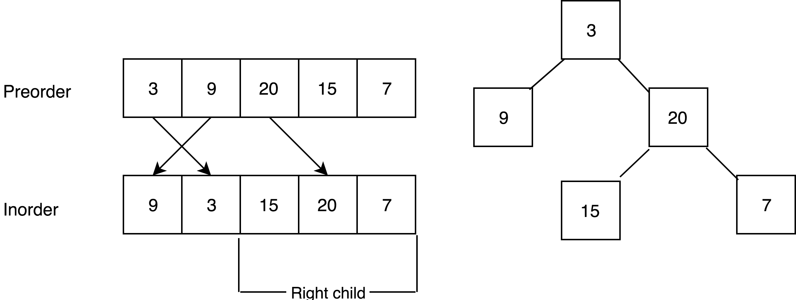

LC 105 106 108 109 - Construct Binary Tree
Table of Contents
105. Construct Binary Tree from Preorder and Inorder Traversal
Link: Construct Binary Tree from Preorder and Inorder Traversal
Problem Description
Given preorder and inorder traversal of a tree, construct the binary tree.
Note: You may assume that duplicates do not exist in the tree.
For example, given
preorder = [3,9,20,15,7]
inorder = [9,3,15,20,7]
Return the following binary tree:
3
/ \
9 20
/ \
15 7
Method & Code
The idea is to find root of each tree during the traversal process.
Since array does not contain duplicated value, root node can be found in inorder[]. The left part of array in inorder[] is the left child of root, right part is right child. Then preorder[1] is the left child’s root, preorder[2] is the right child’s root. Repeat this process and finally this tree can be rebuilt.

After current left child and right child is found, keep this process respectively to left child and right child. The way to find root of it is to iterate the preorder[].
To reduce time consumption, during the first iteration, put all inorder[i] - I pair into hash map as an index.
/**
* preorder[0] is the root node.
* Since array does not contain duplicated value, root node can be found in inorder[].
* The left part of array in inorder[] is the left child of root, right part is right child.
* Then preorder[1] is the left child's root, preorder[2] is the right child's root.
* Repeat this process and finally this tree can be rebuilt.
*
* @param preorder pre order traversal array
* @param inorder in order traversal array
* @return constructed tree
*/
public TreeNode buildTree(int[] preorder, int[] inorder) {
/* Corner case */
if (preorder == null || inorder == null || inorder.length == 0 || inorder.length != preorder.length) {
return null;
}
if (preorder.length == 1) {
return new TreeNode(preorder[0]);
}
HashMap<Integer, Integer> m = new HashMap<>(); // pair: node and its index in inorder array
for (int i = 0; i < inorder.length; i++) {
m.put(inorder[i], i);
}
return traverse(preorder, 0, preorder.length - 1, 0, inorder.length - 1, m);
}
/**
* Find root of children in inorder array and in this way to find their left and right children.
* The start position of preorder array is the root of current tree.
* Find the position of current root in inorder array.
* Then the size of left subtree can be found, which is the left part of inorder array.
* And the root of left subtree is the next value in preorder array.
* The size of right subtree can be found as well, which is the right part of inorder array.
* Based on size of left subtree, the root of right subtree can be found.
* Pass the parameter into the recursion, until start position is larger than end position.
*
* @param preorder preorder traversal array
* @param preStart root in preorder traverse array
* @param preEnd end of tree in preorder array
* @param inStart start of left children
* @param inEnd end of right children
* @param m hash map for quickly find root index in inorder array
* @return root node of current tree
*/
private TreeNode traverse(int[] preorder, int preStart, int preEnd, int inStart, int inEnd, HashMap<Integer, Integer> m) {
if (preStart > preEnd || inStart > inEnd) {
return null; // end point
}
TreeNode root = new TreeNode(preorder[preStart]); // first element in preorder is the root of current tree
int inRoot = m.get(preorder[preStart]); // find index of root in inorder array
int leftChild = inRoot - inStart; // left part of root in inorder array is left child of current root node
root.left = traverse(preorder, preStart + 1, preStart + leftChild, inStart, inRoot - 1, m);
root.right = traverse(preorder, preStart + leftChild + 1, preEnd, inRoot + 1, inEnd, m);
return root;
}
106. Construct Binary Tree from Inorder and Postorder Traversal
Link: Construct Binary Tree from Inorder and Postorder Traversal
Problem Description
Given inorder and postorder traversal of a tree, construct the binary tree.
Note: You may assume that duplicates do not exist in the tree.
For example, given
inorder = [9,3,15,20,7]
postorder = [9,15,7,20,3]
Return the following binary tree:
3
/ \
9 20
/ \
15 7
Method & Code
Almost same idea. The key is that in post-order traversal, last element in initially given array is the root of whole tree.
After found the root index in in-order array, the size of left child and right child can be found. And then the position of left child in post-order array is fixed. The left child’s root is the last element in segment of left child.
/**
* The last element of postorder is always the root of tree.
*
* @param inorder inorder array
* @param postorder postorder array
* @return rebuild binary tree
*/
public TreeNode buildTree(int[] inorder, int[] postorder) {
/* Corner case */
if (postorder.length == 0) {
return null;
}
if (postorder.length == 1) {
return new TreeNode(postorder[0]);
}
HashMap<Integer, Integer> m = new HashMap<>();
for (int i = 0; i < inorder.length; i++) {
m.put(inorder[i], i);
}
return buildTree(postorder, postorder.length - 1, 0, 0, inorder.length - 1, m);
}
/**
* Find the root in postorder and then use the inorder array to find child's length and continue.
* For better understanding, pStart is the last element in postorder, therefore pStart > pEnd.
*
* @param postorder postorder array
* @param pStart postorder start position in current tree (pStart > pEnd)
* @param pEnd postorder end position in current tree (pStart > pEnd)
* @param inStart inorder start position in current tree
* @param inEnd inorder end position in current tree
* @param m hash map
* @return root node of current tree
*/
private TreeNode buildTree(int[] postorder, int pStart, int pEnd, int inStart, int inEnd, HashMap<Integer, Integer> m) {
if (inStart > inEnd || pEnd > pStart) { // end point
return null;
}
TreeNode root = new TreeNode(postorder[pStart]);
int inRoot = m.get(postorder[pStart]);
int leftChild = inRoot - inStart; // size of left subtree
root.right = buildTree(postorder, pStart - 1, pEnd + inRoot - inStart, inRoot + 1, inEnd, m);
root.left = buildTree(postorder, pEnd + leftChild - 1, pEnd, inStart, inRoot - 1, m);
return root;
}
108. Convert Sorted Array to Binary Search Tree
Link: Convert Sorted Array to Binary Search Tree
Problem Description
Given an array where elements are sorted in ascending order, convert it to a height balanced BST.
For this problem, a height-balanced binary tree is defined as a binary tree in which the depth of the two subtrees of every node never differ by more than 1.
Example:
Given the sorted array: [-10,-3,0,5,9],
One possible answer is: [0,-3,9,-10,null,5], which represents the following height balanced BST:
0
/ \
-3 9
/ /
-10 5
Method & Code
Deserialize BST by implementing pre-order traversal.
Root of the tree is at the mid of array and sub array.
/**
* Root of the tree is at the mid of array and sub array.
*
* @param nums given num array
* @return height balanced BST
*/
public TreeNode sortedArrayToBST(int[] nums) {
/* Corner case */
if (nums.length == 0) {
return null;
}
return builder(nums, 0, nums.length - 1);
}
/**
* Pre-order traverse.
* Note that root located at middle of the sorted array.
*
* @param nums given num array
* @param left start index
* @param right right index
* @return root of height balanced BST
*/
private TreeNode builder(int[] nums, int left, int right) {
if (left > right) {
return null;
}
int mid = left + (right - left) / 2; // root located at middle of the sorted array
TreeNode root = new TreeNode(nums[mid]);
root.left = builder(nums, left, mid - 1); // left subtree, like binary search
root.right = builder(nums, mid + 1, right);
return root;
}
109. Convert Sorted List to Binary Search Tree
Link: Convert Sorted List to Binary Search Tree
Problem Description
Given a singly linked list where elements are sorted in ascending order, convert it to a height balanced BST.
For this problem, a height-balanced binary tree is defined as a binary tree in which the depth of the two subtrees of every node never differ by more than 1.
Example:
Given the sorted linked list: [-10,-3,0,5,9],
One possible answer is: [0,-3,9,-10,null,5], which represents the following height balanced BST:
0
/ \
-3 9
/ /
-10 5
Method & Code
Deserialize BST by implementing pre-order traversal. The only difference between this problem and previous problem is the the linked list can not directly access the elements inside list by index.
Therefore, to locate the root in the list, two pointers are acquired: one fast, one slow. fast will move two nodes forward each time, while slow will only move one forward. In this way, when fast reaches the end of list, slow will be just at the middle of list, which is the root node.
/**
* Linked list can not directly get item by index.
* Therefore, use two pointers to traverse the linked list
* When faster one reaches the end of list, slow one will be at root (middle of linked list).
*
* @param head head node
* @return root of height balanced BST
*/
public TreeNode sortedListToBST(ListNode head) {
/* Corner case */
if (head == null) {
return null;
}
return builder(head, null);
}
/**
* Use two pointers to find root node.
* Fast node moves two time faster than slow node.
* In this way, if fast node reaches the end, slow node will be at the middle of list, which is the root.
*
* @param head head node
* @param tail end node
* @return root of height balanced BST
*/
public TreeNode builder(ListNode head, ListNode tail) {
if (head == tail) {
return null;
}
ListNode fast = head, slow = head;
while (fast != tail && fast.next != tail) {
fast = fast.next.next;
slow = slow.next;
}
TreeNode root = new TreeNode(slow.val);
root.left = builder(head, slow);
root.right = builder(slow.next, tail);
return root;
}